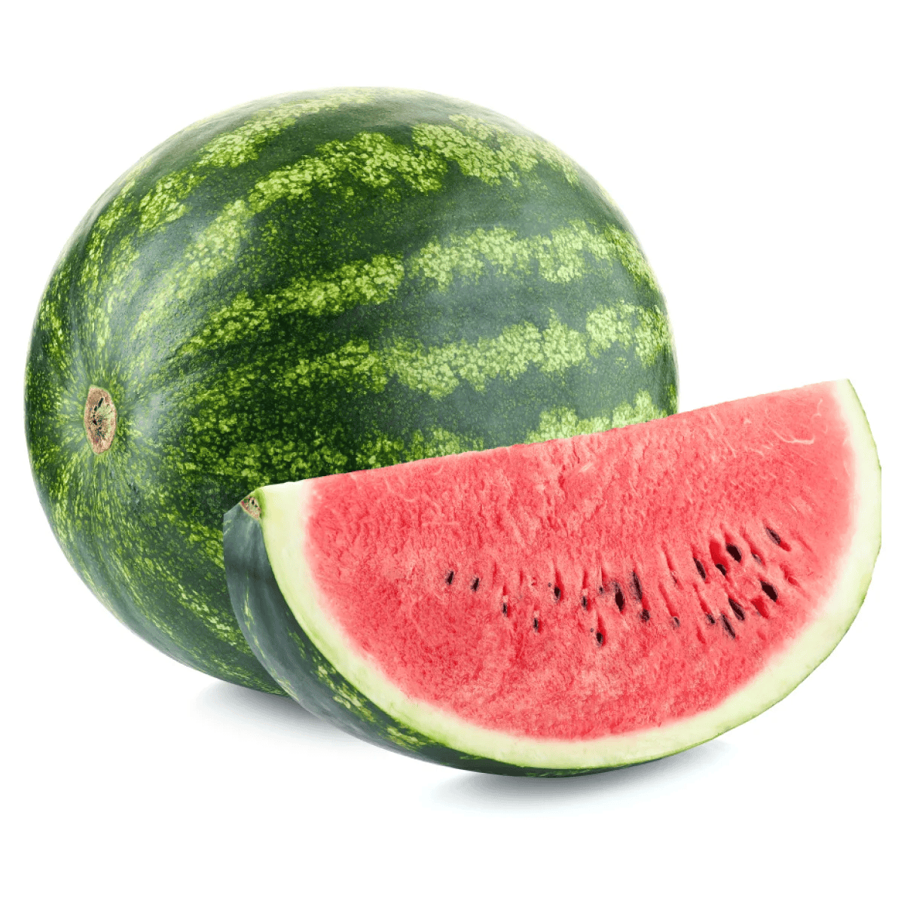
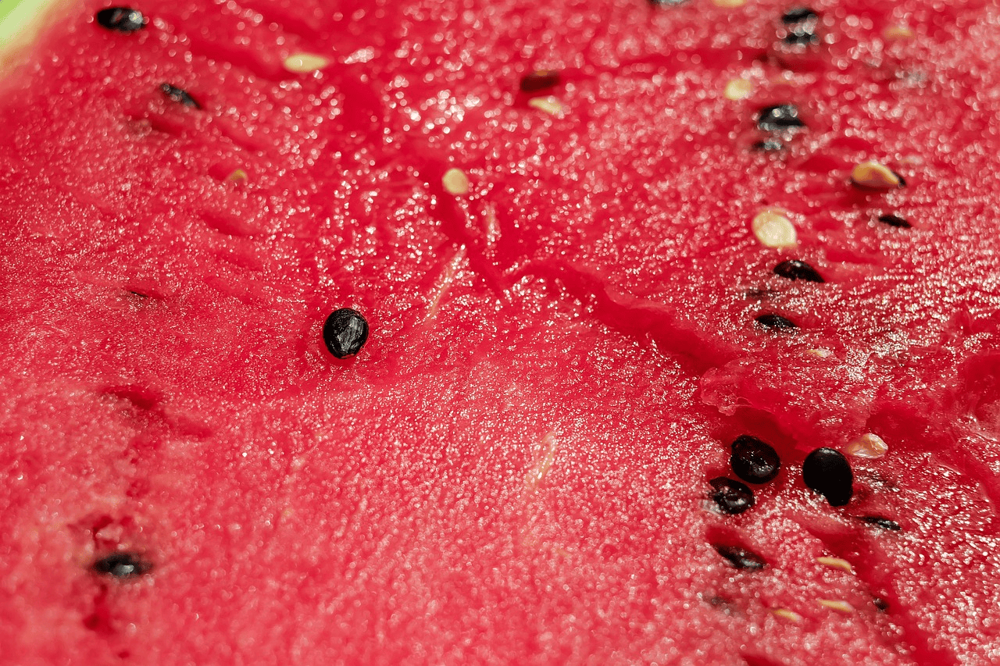
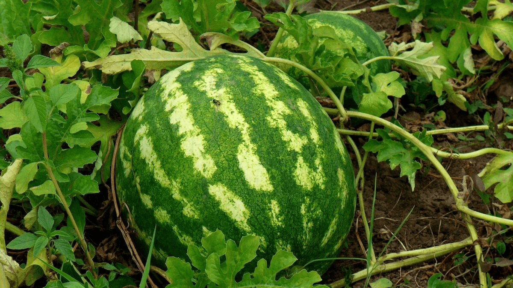
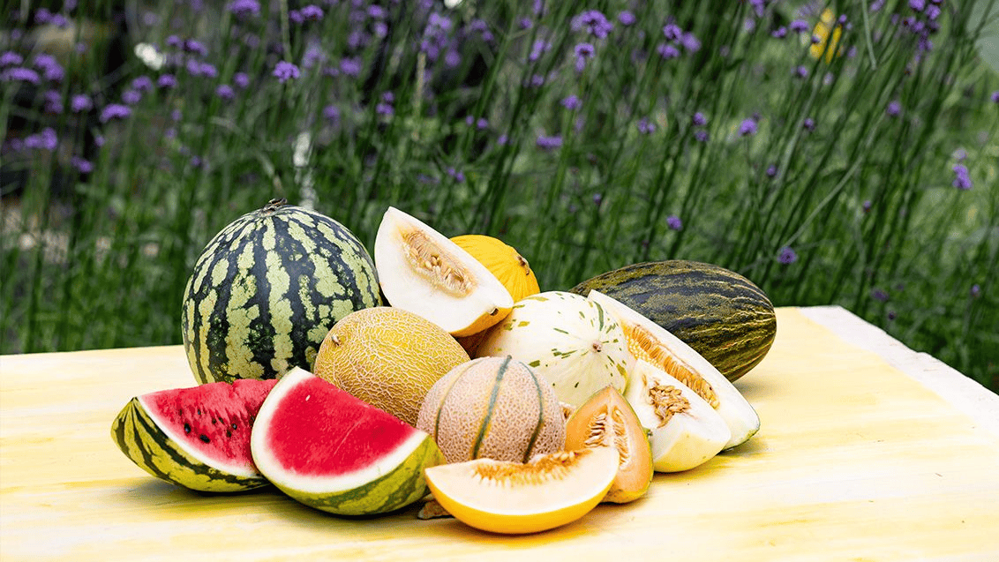
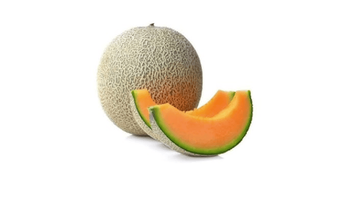
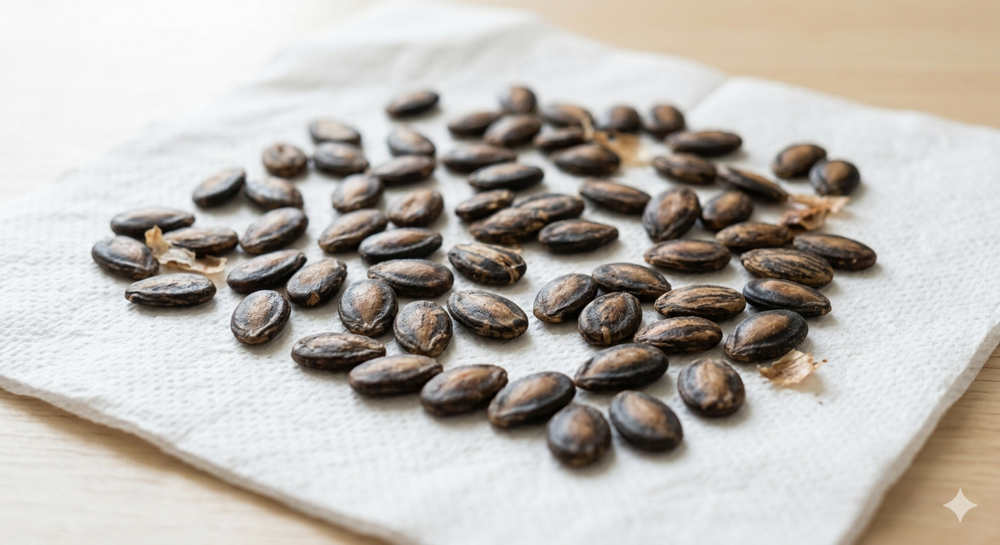

Vodní meloun
Nejznámější druh s charakteristickou červenou dužinou a zelenými pruhy. Plody mohou vážit od 2 kg až po rekordních 122 kg.
- Odrůdy
- Sugar Baby, Crimson Sweet, Charleston Gray
Letní osvěžení roku 2026
Objevte svět šťavnatých melounů – od botaniky přes pěstování až po skvělé recepty.
ProzkoumejteMeloun (Citrullus lanatus) je jednoletá tropická rostlina z čeledi tykvovitých (Cucurbitaceae), jejíž plod je oblíbeným letním osvěžením po celém světě. Pochází z polosuchých oblastí Afriky, kde divoce roste dodnes.
Botanicky se jedná o tzv. pepó – typ bobule s tvrdou slupkou. Plod je tvořen z více než 91 % vodou, díky čemuž je jedním z nejhydratačnějších potravin vůbec. Obsahuje vitaminy A, B6 a C, draslík a lykopen – silný antioxidant.
Světová produkce melounů překračuje ročně 100 milionů tun, přičemž největším producentem je Čína, která zásobuje téměř 70 % světového trhu.
Nejznámější druh s charakteristickou červenou dužinou a zelenými pruhy. Plody mohou vážit od 2 kg až po rekordních 122 kg.
Světlá žlutá nebo béžová slupka, sladká světle oranžová nebo bílá dužina. Pochází ze středomořské oblasti.
Prémiová odrůda s charakteristickým síťkovým vzorem na slupce. Jeden plod může stát v Japonsku i desítky tisíc korun.
Velký světlý plod s bílou nebo nazelenalou dužinou. Vydrží při správném skladování až 6 měsíců.
Úspěšné pěstování melounů v českém klimatu je možné, vyžaduje ale správnou přípravu, dostatek tepla a trpělivost.
Semena vysejte do sadbovačů nebo plastových kelímků s kvalitním substrátem. Udržujte teplotu kolem 25 °C a vlhkost. Klíčení trvá 5–10 dní.
Melouny potřebují plné slunce minimálně 8 hodin denně. Ideální je chráněné, jižně orientované záhony nebo pěstování ve skleníku či fóliovníku.
Sazečky přesuňte ven až po tzv. Zmrzlých mužích. Vzdálenost mezi rostlinami by měla být alespoň 80–100 cm.
Pravidelná zálivka (raději méně a hlouběji než povrchně) a hnojení draslíkem podporuje tvorbu plodů. Mulčování šetří vlhkost v půdě.
Zralý vodní meloun má suchý úponek, matnou slupku a dutý zvuk při poklepání. Cukrové melouny vydají při dotyku charakteristickou vůni.
Fotogalerie reálných odrůd melounů optimalizovaná pro rychlé načítání moderním formátem WebP.






Osvěžující zmrzlina ze 3 surovin: melounu, citronové šťávy a medu. Rozmixujte, zmrazte, podávejte.
Klasická středomořská kombinace sladkého melounu, slaného sýra a mátových lístků překvapí každého hosta.
Rychlý nápoj ideální na horké letní dny. Rozmixujte meloun, přidejte minerálku, limetku a čerstvou mátu.
Původní africké melouny byly hořké a malé. Šlechtění do sladké podoby trvalo tisíce let.
Melouny se pěstují přes 5 000 let. Jejich semena byla nalezena v hrobkách starověkého Egypta.
Lykopen dávající melounu červenou barvu je silnější antioxidant než vitamín E.
V Japonsku se prodávají čtvercové melouny vhodné k darování – cena jednoho kusu přesahuje 200 €.
Semena melounu jsou jedlá a výživná – obsahují bílkoviny, hořčík a zinek.
Nejtěžší vodní meloun na světě vážil 159 kg a byl vypěstován v USA v roce 2013.